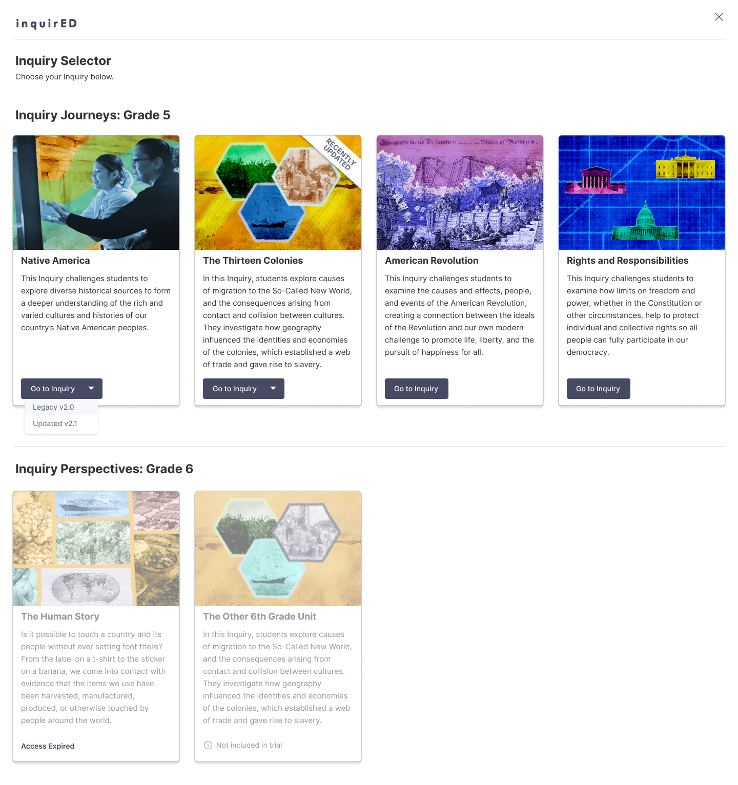
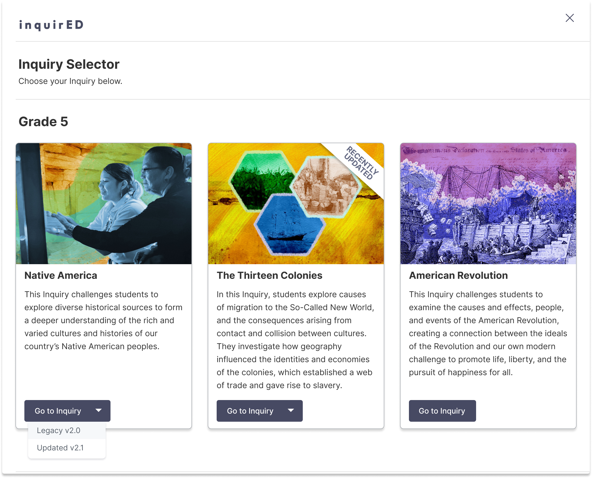
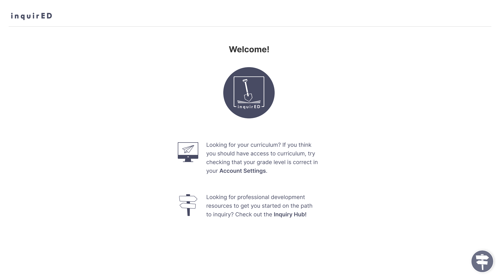
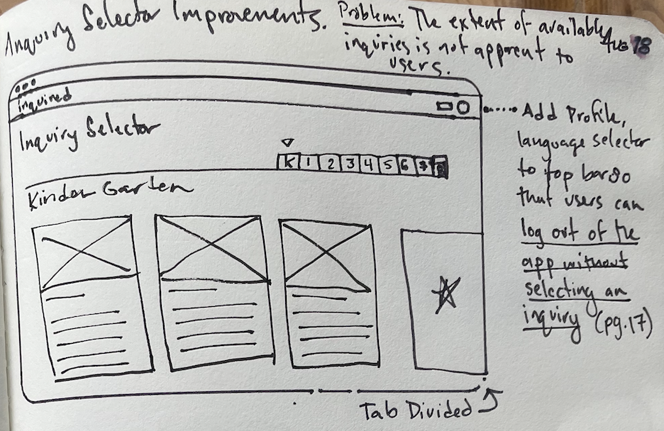
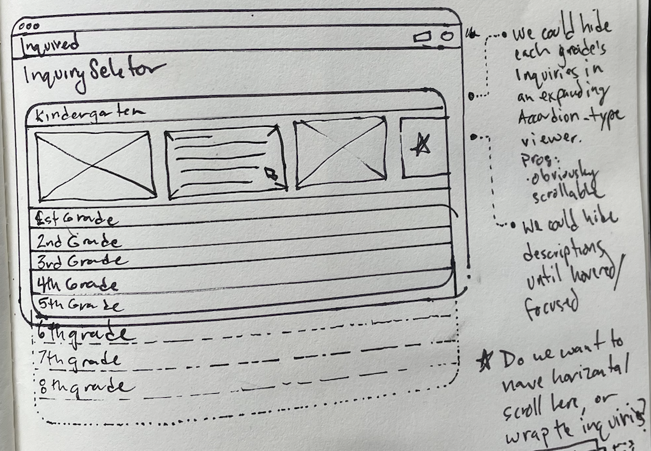
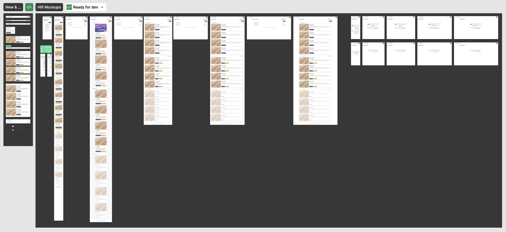
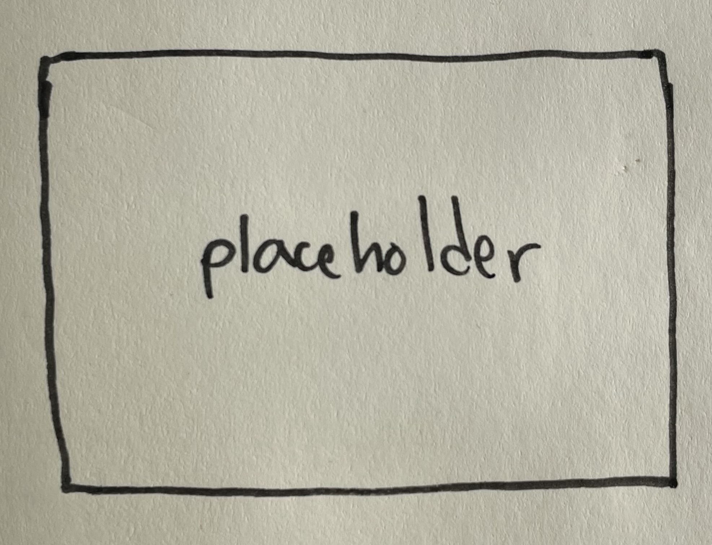

Inquiry Selector Redesign
Responsive UI redesign for InquirED curriculum platform home page.
Problem: First-time users sometimes struggle to find the right content using the minimal Inquiry Selector.
Solution: Redesign the Inquiry Selector with CTAs and visual cues that make it more clear to users where content starts and ends.
Role: Product Designer
Impact: Reduced onboarding ticket reporting for new users, solved 2 accessibility issues with the page, and pioneered better design-to-engineering handoff documentation.
Background
When users logged into their InquirED curriculum platform, the first place they land is the Inquiry Selector. It operates like a central collection of the curricular units available to each teacher. Under the InquirED model, lessons are grouped into Modules, and Modules are grouped into Inquiries - and these inquiries, the largest units of curriculum, are displayed here.

Based on support tickets that were generated by our users, we knew that the original Inquiry Selector presented several problems to teachers looking to get started with their curriculum. First, many teachers were not able to find all of the content that they thought they had access to. Second, Teachers weren’t sure how to access their grade settings when they had access to some but not all of their curricular content. Finally, the page was not responsive to smaller window and screen sizes.
There were second-order process questions to be answered as well. As our design process matures, how might we improve the handoff process between Design and Engineering teams? As the company's first UI/UX Designer, this was an important question for me to figure out with the engineers and product managers.
Process
First, I wanted to tackle the challenges surfaced by our customer support teams, and I was eager to demonstrate the process, craft, and Figma expertise that I brought to the team from my previous product design experience. Looking at the feedback from our users and the Inquiry Selector side-by-side, I tried to diagnose the friction points that were causing users to lose track of curriculum. One thing I noticed is that at different window sizes, users could see some of their content while other content was hidden beyond the boundaries of the screen. This is normal, but users weren’t thinking of scrolling horizontally or vertically because there were no visual cues for content continuity.

How many inquiries does this teacher have access to? How many grades? If you said 3 instead of 5, you're not alone. Many teachers opened tickets because they didn't know they could or should use horizontal and vertical scrolling to access the rest of their content.

While users were prompted to visit their account settings page to check their grade settings in the empty state, there were no similar cues helping them when they had access to some, but not all of their expected Inquiries. In fact, the only non-curriculum button that users could see was the “X” icon button in the top right corner. As a first time user, I wondered “what am I closing?” This button acted like a 'back to curriculum' button, which defaulted to the first module in the first Inquiry. So, if you were a first time user, and you could see some, but not all of your Inquiries, you wouldn’t see any clear paths to your account settings page or to a support function. This also needed to be addressed.
To tackle these issues, I thought about a couple different ways to organize the information. The simplest would be to use wrapping or stacking behavior on the existing card layout, to prevent content from going missing over the side.

Then, I wanted to make it clear where content started and ended, so that users knew if they were seeing everything available to them, even if it wasn’t all visible on the first page. I thought that using tabs or expanding drawers would be two good options for bundling content so that it was easy for users to scan and navigate without any getting lost.

I also wanted to redesign the cards slightly to accommodate different screensizes, from mobile or zoomed-in formats to full desktop web formats. So I sketched up my ideas and brought them to review with my ideas and progress with the main stakeholders for this project - the head of product and members of our engineering team.

After aligning on direction, I developed some first mockups for the tabs and drawers and began drafting reusable components for the cards. After this phase of building out higher-fidelity mockups, we sat down to review the options and choose a final direction to ship. Our largest discussion centered on whether or not to include a grade selector in the final design. The pros of including the grade selector: it would give maximum visibility and control to the user. The cons: only one or two grades would ever be relevant to a given teacher, so why show them more? We decided to direct users to the account settings page so that they would become more familiar with that interface, and so that they weren’t always tweaking their grade settings as a way to control explore InquirED content.
Solution and Handoff
To organize the cards, we decided to go with the drawer system, which gave visual cues so that teachers could understand when they were looking at the entirety of available content, even when there were too many inquiries to show on just one page. A quick expand/collapse all button makes it easy to either see everything, or quickly tidy up the space and take a more direct approach to content sourcing. And, Whether all of the content is there, or some seems missing, teachers could always access their account information or shortcut to their account settings to check which grades they had selected.
When we had the finalized design ready, I surprised the team with 22 screens and 10 reusable components for what they had previously thought of as a very simple page - the previous ‘finalized’ mockups consisted of just 3 screens, leaving the engineers to fill in the rest.

The new handoff format was a key to my success in aligning our Product and Engineering stakeholders on these big new changes to critical platform infrastructure. Before, Product was handing off one or two heavily annotated screens to engineers. Instead of telling engineers with words, I showed exactly how each screen should look, with auto-layout that perfectly defined how each piece of the page should work and interact once built in react.js or html. I also included sections that detailed the new components which were used in the file, and which had been added to the component library.

Reflections
Overall, this project was a great success. We reduced the number of support tickets related to onboarding and content discovery, and we solved the problem of users not being able to find all of their content with an elegant experience. I only wish that I had done a better job of documenting and preserving the intermediate progress of this project throughout the development process, but that is something that I will have to continue to work on.